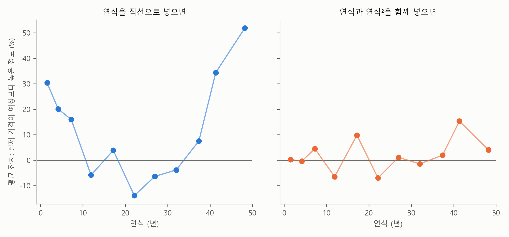
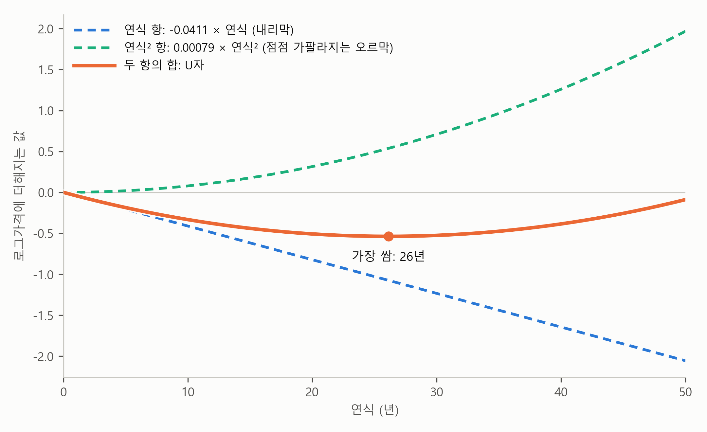
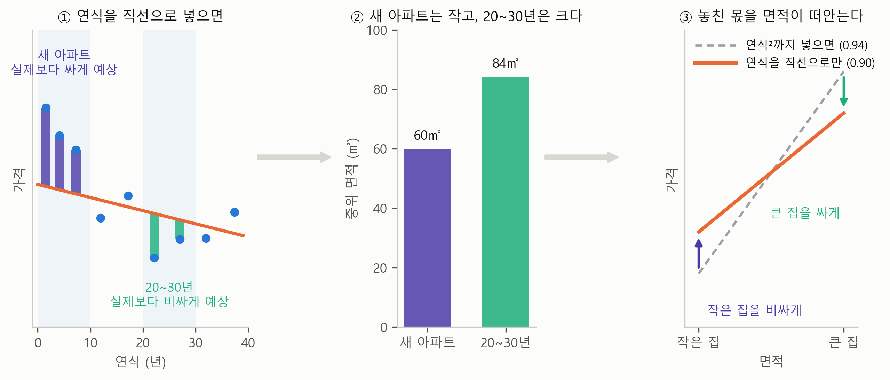

5. 직선으로 부족할 때 — 제곱항#
이 장 첫머리 보고서의 회귀식에서 연식만 변수가 두 개입니다. 연식과 연식²입니다. 표 2-1을 다시 보면 연식의 계수도 “연식 −0.0411”과 “연식² 0.00079” 두 개이고, 마지막 열에는 “연식과 연식²이 함께 곡선을 그린다”고 적혀 있습니다. 연식²을 빼고 연식 하나만 직선으로 넣어 같은 회귀분석을 하면, 연식의 효과는 “1년에 −0.4%”라는 숫자 하나로 나옵니다.
왜 연식만 변수가 두 개일까요? 연식을 하나만 넣으면 무엇이 문제이고, 그것은 어떻게 알아볼 수 있을까요? 그리고 두 변수로 들어간 연식의 계수는 어떻게 읽을까요?
미리 답부터 말하면, 연식과 가격의 관계가 직선이 아니라 U자이기 때문입니다. 직선은 한쪽으로만 기울어 있어서 “내려가다가 다시 올라가는” 관계를 그릴 수 없습니다. 그래서 연식을 제곱한 변수를 하나 더 넣어 회귀식이 곡선을 그릴 수 있게 했습니다. 이 절이 끝나면 직선이 부족하다는 것을 잔차에서 알아보는 법과, 곡선으로 들어간 연식을 읽는 법을 알게 됩니다.
클래식카의 반등#
자동차의 중고 가격을 떠올려 봅시다. 새 차가 가장 비싸고, 해가 갈수록 값이 떨어집니다. 그런데 30~40년이 넘은 차 가운데 일부는 클래식카가 되어 오히려 값이 다시 오릅니다. 연식과 가격의 관계가 처음에는 내리막이다가, 어느 지점부터 오르막으로 바뀌는 것이죠.
이런 관계에 직선을 그으면 어떻게 될까요? 직선은 처음부터 끝까지 한 방향으로만 기울어 있습니다. 내리막으로 그으면 클래식카의 반등을 놓치고, 오르막으로 그으면 새 차가 비싼 것을 놓칩니다. 어떻게 그어도 반쪽만 맞습니다. 이것이 이 절 전체를 꿰는 한 문장입니다.
직선은 한 방향으로만 간다. 내려가다 다시 올라가는 관계에는 곡선이 필요하다.
아파트도 마찬가지입니다. 새 아파트는 비싸고, 지은 지 오래될수록 값이 떨어지다가, 재건축을 바라볼 만큼 오래된 아파트는 다시 비싸집니다. 보고서가 해석에 “재건축 기대”라고 적어 둔 것이 이 반등입니다.
직선을 그으면 잔차에 패턴이 남는다#
그런데 연식과 가격의 관계가 U자라는 것은 어떻게 알았을까요? 단순회귀분석 장에서 배운 잔차 그림이 답을 줍니다. 잔차는 실제 가격에서 회귀식이 예상한 가격을 뺀 것, 곧 회귀식이 놓친 몫입니다. 회귀식이 관계를 잘 잡았다면 잔차는 어느 연식에서나 0 주위에 고르게 흩어져야 합니다. 어떤 연식에서는 늘 위로, 어떤 연식에서는 늘 아래로 치우친다면, 회귀식이 그 부분을 체계적으로 놓치고 있다는 신호입니다.
그림 5-1은 연식을 직선으로만 넣은 회귀식(면적, 층, 연식, 구)과 연식²까지 넣은 보고서의 회귀식에서 잔차를 연식 구간별로 평균 낸 것입니다.

그림 5-1. 연식 구간별 평균 잔차(실제 가격이 회귀식의 예상보다 높은 정도). 왼쪽 패널은 연식을 직선으로만 넣은 회귀식, 오른쪽 패널은 연식과 연식²을 함께 넣은 보고서의 회귀식이다.
그림에서 보듯이 왼쪽 패널의 잔차에는 뚜렷한 패턴이 있습니다. 지은 지 10년이 안 된 아파트는 실제 가격이 예상보다 16~30% 높고, 20년대 초반의 아파트는 14% 낮으며, 40년이 넘은 아파트는 34~52%나 높습니다. 양 끝이 위로, 가운데가 아래로 치우친 U자입니다. 직선이 새 아파트와 오래된 아파트의 값을 낮게, 중간 연식의 값을 높게 예상하고 있다는 뜻입니다. 잔차의 패턴이 곧 회귀식이 놓친 관계의 모양입니다.
오른쪽 패널은 연식과 함께 연식²을 넣은 보고서의 회귀식입니다. 여기서는 이 패턴이 대부분 사라집니다. 잔차가 0 주위를 오르내릴 뿐 한쪽으로 크게 치우치지 않습니다. 보고서의 회귀식이 연식과 가격의 U자 관계를 잡아낸 것입니다. 40년 남짓한 구간에 조금 남은 치우침은 이 절의 끝에서 다시 봅니다.
연식을 제곱한 변수 — 제곱항#
회귀식이 곡선을 그리게 하는 방법은 간단합니다. 연식을 제곱한 변수 연식²을 하나 더 만들어 함께 넣는 것입니다. 연식이 10년인 아파트는 연식² = 100, 20년이면 400, 40년이면 1,600입니다. 이렇게 제곱한 변수를 제곱항(squared term)이라고 부르고, 제곱항을 넣어 곡선을 그리는 회귀분석을 다항 회귀(polynomial regression)라고도 부릅니다.
보고서에서 \(\hat{c}_1\)은 −0.0411, \(\hat{c}_2\)은 0.00079입니다. 두 항이 어떻게 U자를 만드는지는 그림 5-2에서 볼 수 있습니다.

그림 5-2. 연식 항(파랑 점선)과 연식² 항(초록 점선), 그리고 둘의 합(주황). 세로축은 로그가격에 더해지는 값이다.
그림에서 보듯이 연식 항 \(\hat{c}_1 \times \text{연식}\)은 곧게 내려가는 직선입니다. 연식² 항 \(\hat{c}_2 \times \text{연식}^2\)은 \(\hat{c}_2\)이 양수(0.00079)이므로, 연식이 0보다 큰 구간에서는 올라가는 곡선인데, 처음에는 거의 평평하다가 연식이 커질수록 점점 가팔라집니다. 연식²이 연식보다 훨씬 빨리 커지기 때문입니다. 연식이 10년에서 20년으로 두 배가 되면 연식²은 100에서 400으로 네 배가 됩니다.
두 항을 더하면, 처음에는 연식 항의 내리막이 이겨서 값이 내려가다가, 연식이 커질수록 연식² 항의 오르막이 따라잡아 어느 지점에서 바닥을 찍고 다시 올라갑니다. 그 바닥이 26년입니다. 두 계수만 알면 바닥의 위치도 계산할 수 있습니다. \(\hat{c}_1\)에서 부호를 바꾼 0.0411을 \(\hat{c}_2\)의 두 배로 나누면 되는데, 0.0411 ÷ (2 × 0.00079)는 약 26입니다. 반대로 \(\hat{c}_2\)이 음수로 나오면 곡선은 거꾸로, 올라갔다 내려오는 ∩자가 됩니다. 나이에 따라 소득이 오르다 꺾이는 관계가 그런 예입니다. 이때 꼭짓점은 바닥이 아니라 꼭대기이고, 같은 방법(부호를 바꾼 \(\hat{c}_1\)을 \(\hat{c}_2\)의 두 배로 나누기)으로 구합니다.
곡선은 계수 하나로 읽지 않는다#
제곱항이 들어가면 계수를 읽는 법이 달라집니다. 연식의 계수 −0.0411만 보고 “1년에 4%씩 가격이 낮아진다”고 읽으면 틀립니다. 연식이 한 해 늘면 연식 항과 연식² 항이 함께 움직이고, 연식²이 얼마나 움직이는지는 모든 연식에 똑같지 않고 연식마다 다르기 때문입니다. 그래서 곡선으로 들어간 변수는 계수 하나가 아니라 곡선 전체로 읽습니다. 보고서가 연식을 그림으로 보여 준 것도 이 때문입니다.
가장 쉬운 방법은 앞 절들에서 해 본 것처럼 아파트 한 채를 정해 두고 연식만 바꿔 보는 것입니다. 표 5-1은 노원구의 전용 84㎡, 10층 아파트를 놓고 연식만 바꿨을 때 보고서의 회귀식이 예상하는 가격입니다. 보고서의 그림 오른쪽 패널의 주황 곡선이 바로 이 값들을 이어 그린 것입니다.
표 5-1. 같은 아파트 한 채(노원구, 84㎡, 10층)의 연식만 바꿨을 때 예상 가격
연식 |
0년 |
5년 |
10년 |
20년 |
26년 |
30년 |
40년 |
|---|---|---|---|---|---|---|---|
예상 가격 |
13.9억 |
11.5억 |
9.9억 |
8.4억 |
8.1억 |
8.2억 |
9.4억 |
표에서 보듯이 같은 “다섯 해”라도 언제의 다섯 해냐에 따라 가격 차이가 다릅니다. 신축과 5년 된 아파트는 2.4억 차이가 나지만, 26년과 30년 된 아파트는 거의 차이가 없습니다. 그리고 26년의 바닥을 지나면 오래될수록 오히려 비싸져서, 40년이면 9.4억으로 20년 된 아파트보다 비쌉니다. 직선으로 넣은 연식이 말하던 “1년에 0.4%씩 가격이 낮아진다”는 이 곡선을 한 줄로 눌러 놓은 평균이었던 셈입니다.
곡선을 넣자 다른 계수도 움직였다#
연식을 직선으로만 넣은 회귀식과 보고서의 회귀식을 비교하면, 바뀐 것은 연식만이 아닙니다. 3절에서 구를 넣자 0.91로 내려간 면적 탄력성은, 층과 연식을 직선으로 더해도 0.90으로 거의 그대로입니다. 그런데 연식²을 하나 더 넣어 연식을 곡선으로 만들면 0.94로 올라갑니다. 면적 탄력성을 끌어올린 것은 연식이 아니라 연식²입니다. 3절에서 이 절로 미뤄 둔 이야기가 이것입니다. 2절에서 층의 계수가, 3절에서 면적 탄력성이 조건을 맞추자 작아진 것과 달리, 이번에는 관계를 제대로 잡자 계수가 커졌습니다. 회귀식을 바로잡으면 다른 계수는 작아질 수도 있고 커질 수도 있다는 뜻입니다.
까닭은 대략 이렇습니다. 그림 5-1의 왼쪽 패널에서 보았듯이, 연식을 직선으로만 넣으면 새 아파트는 실제보다 싸게, 바닥 근처인 20~30년 된 아파트는 실제보다 비싸게 예상합니다(실제 가격이 예상보다, 지은 지 10년이 안 된 아파트는 평균 18% 높고 20~30년 된 아파트는 10% 낮습니다). 이렇게 연식으로 제대로 파악하지 못하는 부분을 회귀식은 면적으로 메웁니다. 왜 면적일까요? 연식과 면적의 관계를 보면, 새 아파트는 작은 편이고 20~30년 된 아파트는 큰 편입니다(중위 면적 60㎡ 대 84㎡). 그래서 회귀식은 작은 아파트는 비싸게, 큰 아파트는 싸게 매겨서, 연식으로 파악하지 못한 부분을 면적에 떠넘깁니다. 결국 면적에 따른 가격 차이를 작게 평가하게 되고, 그래서 면적 탄력성이 0.90으로 낮아졌던 것입니다. 연식²이 들어가 곡선이 연식의 몫을 제대로 잡자 면적으로 메울 일이 없어졌고, 면적 탄력성은 0.94로 올라갔습니다.
이 과정을 세 단계로 그리면 그림 5-3과 같습니다.

그림 5-3. 연식을 직선으로만 넣었을 때, 직선이 놓친 몫이 면적으로 넘어가는 과정. 왼쪽 패널은 연식 구간별 점과 직선 사이의 틈(보라는 실제 가격이 예상보다 높은 몫, 초록은 낮은 몫), 가운데 패널은 10년이 안 된 아파트와 20~30년 된 아파트의 중위 면적, 오른쪽 패널은 두 회귀식의 면적 탄력성을 면적과 가격의 직선으로 그린 것이다.
그림에서 보듯이 왼쪽 패널에서 직선이 놓친 몫은 새 아파트에서는 위로(보라), 20~30년 된 아파트에서는 아래로(초록) 남습니다. 가운데 패널은 이 두 무리가 면적에서도 갈린다는 것을 보여 줍니다. 그래서 오른쪽 패널처럼, 보라의 몫은 작은 집의 가격을 올리고 초록의 몫은 큰 집의 가격을 내리는 쪽으로 면적의 계수에 섞여 들어, 면적 직선이 눕습니다. 연식²을 넣어 왼쪽 패널의 틈이 닫히면, 면적 직선은 다시 점선 자리로 돌아갑니다.
2절과 3절에서 본 누락 변수 편향과 같은 일입니다. 3절에서는 구가 회귀식에 빠지자 면적이 구의 몫을 떠안았습니다. 그것처럼 여기서는 연식이 회귀식에 들어 있기는 했지만 직선으로만 들어가 있어서, 직선이 잡지 못한 몫(새 아파트라서 더 비싼 몫)을 면적이 떠안았습니다. 변수를 빠뜨리거나, 변수를 잘못된 모양으로 넣으면, 회귀식이 놓친 몫은 다른 변수의 계수로 흘러 들어갑니다.
곡선도 완벽하지는 않다#
그림 5-1의 오른쪽 패널을 다시 보면, 40년 남짓한 아파트의 잔차가 아직 15% 위에 있습니다. 제곱항이 그리는 곡선은 바닥(26년)을 사이에 두고 양쪽이 거울에 비친 듯 똑같은 모양입니다. 그런데 실제로는 40년 무렵에 값이 이보다 더 가파르게 오릅니다. 제곱항은 직선보다는 훨씬 낫지만, 그것도 여전히 정해진 모양 하나를 고른 것입니다.
모양을 미리 정하지 않는 방법도 있습니다. 3절에서 배운 더미 변수를 쓰는 것입니다. 연식을 해마다, 또는 5년마다 구간으로 나누어 구간마다 스위치를 달면, 회귀식이 구간마다 가격 수준을 따로 정하므로 어떤 모양이든 따라갈 수 있습니다. 연식을 해마다 더미로 넣어 보면 \(R^2\)이 0.719에서 0.742로 조금 오르고, 면적 탄력성(0.93)은 보고서와 거의 같습니다. 보고서의 결론이 곡선의 모양을 어떻게 정하느냐에 크게 흔들리지 않는다는 뜻이기도 합니다.
💡 팁: AI에게 회귀분석을 맡길 때 “주요 변수별로 잔차 그림도 그려 줘”라고 덧붙이세요. 잔차에 패턴이 보이면 “이 변수는 직선으로 부족해 보이니 제곱항을 넣어 다시 해 줘”라고 이어서 부탁하면 됩니다.
요약 — 이 절의 물음과 답
왜 연식만 변수가 두 개일까? 연식과 가격의 관계가 직선이 아니라 U자이기 때문이다. 새 아파트는 비싸고 오래될수록 값이 떨어지다가 재건축을 바라볼 만큼 오래된 아파트는 다시 비싸지는데, 직선은 한 방향으로만 기울어 있어서 이런 관계를 그릴 수 없다. 그래서 연식을 제곱한 변수 연식²을 함께 넣어 회귀식이 곡선을 그리게 했고, 이렇게 제곱한 변수를 제곱항이라고 한다.
직선으로 부족하다는 것은 어떻게 알아볼까? 잔차 그림을 본다. 연식을 직선으로만 넣으면 잔차가 새 아파트와 오래된 아파트에서는 위로, 중간 연식에서는 아래로 치우친 U자를 그리는데, 이런 잔차의 패턴이 곧 회귀식이 놓친 관계의 모양이다. 연식²까지 넣은 보고서의 회귀식에서는 이 패턴이 대부분 사라진다.
곡선으로 들어간 연식은 어떻게 읽을까? 계수 하나가 아니라 곡선 전체로 읽는다. 연식이 한 해 늘 때 연식² 항이 움직이는 정도가 연식마다 다르기 때문에, 아파트 한 채를 정해 두고 연식만 바꿔 가며 예상 가격을 본다. 그렇게 보면 예상 가격은 지은 지 26년에서 바닥을 찍고 다시 오른다.
연식을 곡선으로 바꾸자 왜 면적의 계수까지 달라졌을까? 연식을 직선으로만 넣었을 때는 직선이 잡지 못한 몫, 곧 새 아파트라서 더 비싼 몫을 면적이 떠안았기 때문이다. 연식²이 들어가 곡선이 연식의 몫을 제대로 잡자, 면적 탄력성은 0.94로 올라갔다. 변수를 빠뜨리거나 잘못된 모양으로 넣으면, 회귀식이 놓친 몫은 다른 변수의 계수로 흘러 들어간다.
이 장을 마치며#
이제 이 장 첫머리의 보고서를 처음부터 끝까지 읽을 수 있습니다. 요약의 “다른 조건이 같을 때”는 회귀식 안에서 나머지를 똑같이 두고 하나만 바꿔 본 비교입니다(2절). 강남구의 2.8배는 스위치로 넣은 더미 변수의 계수를 배수로 바꾼 값입니다(3절). 보고서의 그림 왼쪽 패널은 구 더미 24개의 계수를 “노원구의 몇 배”로 바꿔 구마다 점 하나로 그린 것이고, 오른쪽 패널은 제곱항으로 그린 연식의 곡선입니다(3절, 5절). 그리고 보고서의 “한 층 1.1%”는 어디서나 같다고 가정한 평균이며, 강남 3구에서는 더 크다는 것도 확인했습니다(4절). 보고서의 계수는 모두 면적, 층, 연식, 구를 함께 넣은 회귀식의 계수이고, 같은 계수라도 무엇을 함께 넣었느냐에 따라 달라진다는 것도 잊지 말아야 합니다(2절, 3절, 5절).
남은 것은 보고서의 마지막 줄, “이 결과는 상관이지 인과가 아니다”입니다. 다른 조건이 같으면 강남구 아파트가 노원구의 2.8배라는 것은 알았지만, 왜 그만큼 비싼지는 회귀분석이 말해 주지 않았습니다. 2.8배 안에는 학군이나 지하철역과의 거리처럼, 회귀식에 넣지 않은 차이가 모두 섞여 있기 때문입니다. 그래서 회귀분석의 결과를 원인과 결과의 이야기로 읽어서는 안 됩니다. 결과를 원인으로 읽고 싶어지는 바로 그때가 가장 조심해야 할 때입니다.